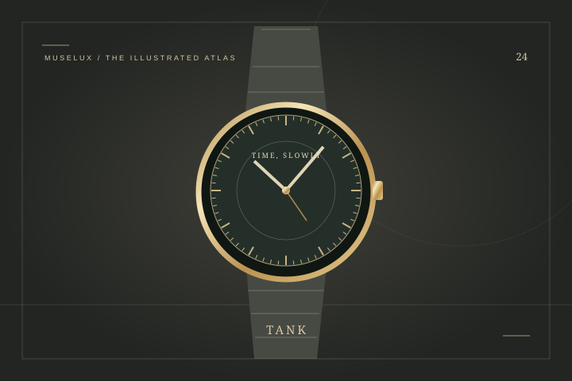

THE STYLE EDIT
THE STYLE EDITCartier
Santos de Cartier, Medium, Steel, Silvered Opaline Dial
The medium Santos makes a strong case for a watch as part of the outfit.
US$8,400Explore ↗
U.S. reference · before taxTHE HOUSE / 法国 / EST. 1847
卡地亚 — 让一颗螺钉，也能诉说感情
卡地亚的作品里，有螺钉、钉子、三色圆环，也有猎豹与方形表盘。它们的形状不同，却都能把一个清楚的设计念头变成长期使用的语言。品牌从巴黎珠宝工坊起步，在腕表与首饰之间留下许多互相呼应的线条。LOVE 看的是节奏和闭合方式，Trinity 看的是圆环如何相依，Tank 则让两条平行表耳成为记忆点。初次认识卡地亚，不必先追逐宝石大小；先试着从比例、边缘和佩戴动作出发。一个日常物件怎样被重新看见，又怎样贴近身体，这些问题比单独的价格标签更能打开它的故事。
A FEW CHAPTERS IN TIME
Louis-François Cartier 接手巴黎珠宝工坊
巴黎门店迁至和平街十三号
为飞行家 Santos-Dumont 创作腕表
Tank 腕表的设计诞生
Trinity 三色圆环问世
LOVE 手镯在纽约诞生
ICONS OF THE HOUSE
THE STYLE EDITThe medium Santos makes a strong case for a watch as part of the outfit.
 THE STYLE EDIT
THE STYLE EDITThe small Tank Must gives a tailored wardrobe a quiet point of focus.
 THE STYLE EDIT
THE STYLE EDITTrinity makes color and movement inseparable.
 THE STYLE EDIT
THE STYLE EDITA circle can be as expressive as a stone.
把一颗螺钉，写成亲密的记号。
打开词条 ↗一根日常钉子，也有自己的弧线。
打开词条 ↗三道相依的圆，留下流动的空间。
打开词条 ↗
让两条平行线，定义时间的形状。
打开词条 ↗KEEP READING